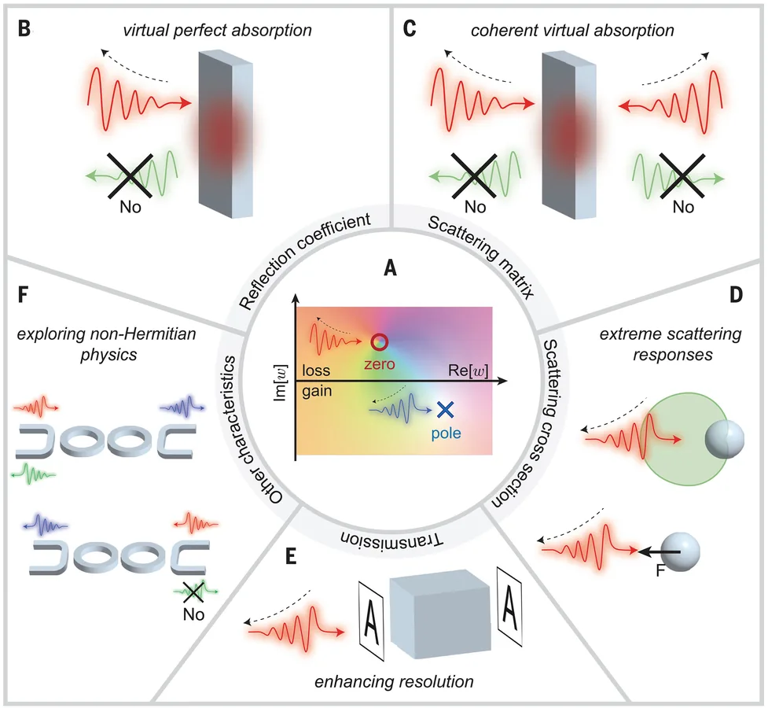

Complex-frequency electrodynamics and non-Hermitian scattering
We study resonant wave systems using complex-frequency excitations, non-Hermitian scattering theory, and temporal waveform design to reveal poles, zeros, and transient response channels that are hidden in steady-state measurements.
- Pole-zero engineering in microwave, optical, and polaritonic systems
- Waveform design for scattering beyond conventional bounds
- Fano interference, coherent perfect absorption, and exceptional response
- Complex-frequency excitations for resonator diagnostics
